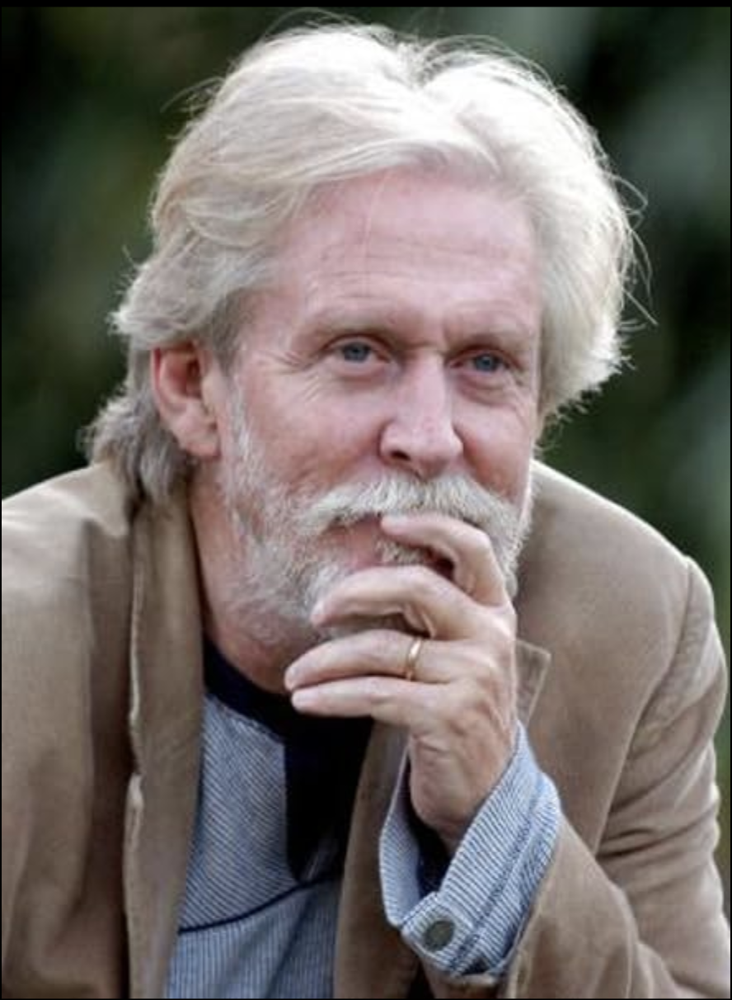

01THE LONG
EXPOSURE
EXPOSURE
The Long Exposure
Feature · 2.39:1
A production house that doesn't shoot scenes — it engineers the way you remember them.
We compose for the cut that lives in memory — long after the lights come up.
Feature · 2.39:1
Branded film · 16:9
Series · OTT original
Built frame by frame, felt all at once.
 01
01Founder · Director
 02
02Founder · Director

03Ensemble · Lead